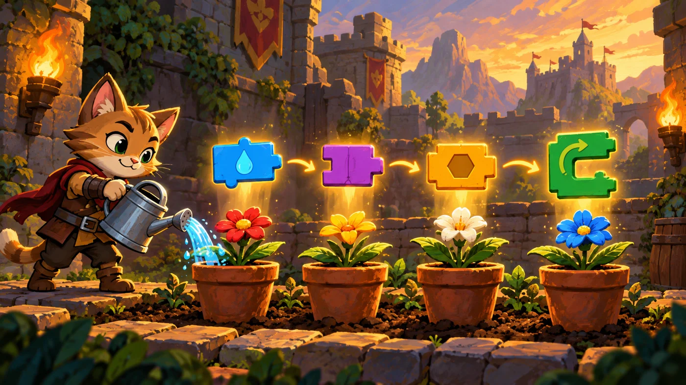
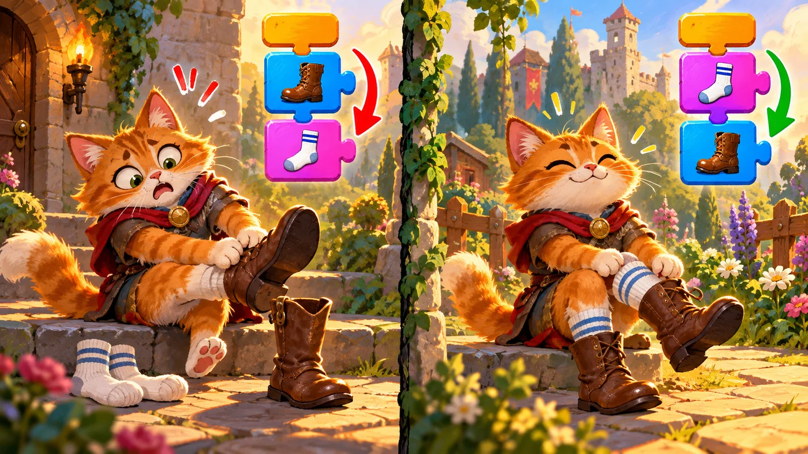

扣哒考级 · GESP 图形化 一级 · 第 5 单元 | 积木花园 BLOCKBLOOM GARDEN
排队浇水 顺序结构与程序思维
Sequence and Step-by-Step Thinking

安雅
红发队长 · 你的旅伴
花圃里排着四个花盆，从左边第一个开始，一路排到右边。安雅把洒水壶递给你：
"一盆一盆地浇，别跳。"
你照着做，忽然发现——不跳着来，反而一次都没浇漏。
你照着做，忽然发现——不跳着来，反而一次都没浇漏。
安雅 · 红发队长
编程说到底只有三种结构：顺序、分支、循环。这一单元先把最简单的顺序吃透。别嫌它简单——一级的编程题几乎都是"把一件事按顺序写清楚"， 顺序都写不对，后面更复杂的就别提了。
0 单元导语与目标
Before We Start
0.1 学习目标
- 知道程序的三种基本结构：顺序、分支、循环；
- 理解顺序结构：积木从上到下一块一块执行，顺序不能乱；
- 会用等待、说几秒、滑行几秒控制作品的节奏；
- 学会把一件事拆成几步，用积木一句句写下来；
- 养成"先想步骤、再拼积木、最后点绿旗检查"的习惯。
0.2 考纲对照
| 考纲知识块 | 考纲要求 | 本单元小节 |
|---|---|---|
| 4 三大基本结构 | 顺序结构、分支结构、循环结构 | 1.1～1.3、2.1～2.2 |
| 3 编程数学（预演） | 时间与节奏的表示 | 3.1～3.3 |
| 15 独立完成简单程序 | 掌握图形化编程基本逻辑和思路，能独立完成简单程序编写 | 4.1、4.2 |
顺序结构是所有程序的地基——就算写了再多的分支和循环，' '程序也是一步一步往下走的。这一单元先把这块地基打牢。
1 程序的三种结构
Three Basic Structures
1.1 顺序
花园里有一排四个花盆，小猫从左边第一个开始，一个接一个浇过去。 它做的事情很简单：先做第一件，再做第二件，最后做第三件。这就是顺序。

assets/illustrations/scratch-L1-05-01_watering_line.webp
【配图位】一排四个花盆，小猫严格从左到右依次浇水，每个花盆上方浮着编号 1-2-3-4 的发光步骤标记。（提示词见《GESP配图清单与AI绘图提示词》第四节 1-5）
1.2 分支
第二个花盆旁边立着一块牌子：土干了才浇水。于是小猫每走到一个花盆前， 都得先"判断一下"。这就是分支。
1.3 循环
四个花盆做的事情几乎一模一样。与其写四遍，不如写一遍然后重复四次。这就是循环。
图 2（SVG）：顺序、分支、循环
打个比方：顺序是排队打饭——一个接一个；分支是过安检——有证件就走这边，没证件就走那边；循环是跳绳——同一组动作重复到数满为止。
2 顺序结构
Sequence
2.1 一条一条往下执行
这是图形化编程里最基础、也是唯一的执行方式：从最上面那块开始，一块一块往下走。
重点示例：从上到下，一步不落
图形化积木
读法 积木的排列顺序就是执行顺序；上一块没执行完，下一块不会开始
2.2 顺序错了会怎样

assets/illustrations/scratch-L1-05-02_order_matters.webp
【配图位】左右对照——左边小猫先穿靴子再穿袜子显得很滑稽，右边顺序正确。（提示词见《GESP配图清单与AI绘图提示词》第四节 1-5）
对照着看：同样是三块积木，顺序不同结果不同
图形化积木
先穿袜子、再穿靴子（对）
先穿靴子、再穿袜子（错）
要点 积木一样多、内容一样多，只是换了上下位置，做出来的事就完全不对了
这是顺序结构最爱考的一点：考试给你几块积木，打乱顺序问你"哪一组是对的"。判断方法很简单——闭上眼睛在脑子里演一遍，看结果合不合常理。
3 等待与节奏
Waiting and Timing
3.1 等待 1 秒
如果让小猫"唰"地一下把所有花盆浇完，你根本看不清它做了什么。等待积木就是用来控制节奏的。
重点示例：让每一步都被看见
图形化积木
读法 "等待 1 秒"就是让这段脚本先停住，数到 1 秒再往下执行；参数可以填小数
3.2 说几秒、滑行几秒
有几块积木本身就带"秒"：
图 4（SVG）：自带时间的四块积木
一个关键区别：说……2 秒会等 2 秒再执行下一块；而说……（不带秒）说完就立刻往下走，气泡会一直挂着。
3.3 让动画看得见
重点示例：有节奏的一段浇水动画
图形化积木
要点 把"滑行"和"说"放进循环里，就有了"走一步、浇一盆"的节奏感；去掉等待，动作会快得看不清
4 把问题拆成步骤
Breaking It Down
4.1 先说人话，再拼积木
安雅教你的第一件事不是拼积木，而是用中文把要做的事写下来。
图 5（SVG）：先想清楚，再动手
打个比方：拼积木就像按菜谱做菜。菜谱上的第一步永远是"先准备"，不会让你先开火再切菜。写程序也一样——先把步骤写顺，再动手。
4.2 一步一步检查
图 6（SVG）：调试也要讲顺序
这就是考纲说的"程序思维"：把一个任务拆成一件件小事，按先后顺序排好，再一件件交给角色去做。能独立完成一个简单程序，一级的编程题就稳了。
5 代码实战
Level Practice
这一关是"顺序结构"最朴素的例子：路是固定的，照着一格一格走完就行。
关卡 13
徒步旅行者
进入关卡 →
故事：
花园的边缘有一段折线小路：先向右走两格，再往上走三格，最后再向右两格。
路上没有障碍，也没有岔路——只要你把这三段按顺序写清楚，就能一次走到底。
思路：路线只有三段：右 2、上 3、右 2。每一段都是"面向 + 移动"两块积木， 按顺序往下扣，顺序对了路就通了。
重点示例：三段路，六块积木，顺序不能乱
图形化积木
读法 "面向 + 移动"是一组；三组按顺序排下来，就是整条路线
自己试一试：把中间那一段"上 3"和最后一段"右 2"换个位置再跑一次——积木一块没变，路线却完全不同。这就是顺序结构的意义。
你会发现这条路写得有点啰嗦：如果路更长，积木就要拖更多块。 有没有办法"写一遍、用很多遍"？——有，就是下一单元要学的分支和再下一单元的循环。
把这段脚本和"用中文写步骤"对一遍：右 2 → 上 3 → 右 2，三句话对应六块积木，一一对得上。能对上，说明你真的想清楚了。
去扣哒世界闯这一关 →
6 常见陷阱
Common Traps
陷阱 1：把积木顺序拖错。顺序结构的程序里，积木的上下位置就是执行顺序，拖错一块整个结果就变了。
正确做法：拖完积木后，用眼睛从上往下扫一遍，在心里把每一步念出来。
正确做法：拖完积木后，用眼睛从上往下扫一遍，在心里把每一步念出来。
陷阱 2：忘了加"等待"。动作太快，观众只看到一帧画面，看不出过程。
正确做法：凡是"要做几步给人看"的作品，就在每一步后面补一块"等待 0.5 秒"。
正确做法：凡是"要做几步给人看"的作品，就在每一步后面补一块"等待 0.5 秒"。
陷阱 3：把"说 2 秒"和"说（不带秒）"混着用。带秒的会等，不带的不会等，气泡会一直挂着不消失。
正确做法：想让气泡自己消失就用带秒的；想让它一直显示，就用不带秒的。
正确做法：想让气泡自己消失就用带秒的；想让它一直显示，就用不带秒的。
陷阱 4：程序不对就到处乱改。改到最后连自己都不知道动了什么。
正确做法：从第一块开始往下查，找到第一处和你心里想的不一样的地方，只改那一处。
正确做法：从第一块开始往下查，找到第一处和你心里想的不一样的地方，只改那一处。
7 题目练习
Practice
第 1 题改编自 2026 年 9 月 · 图形化编程 一级 编程题 第 1 题的准备工作，其余为原创练习题。
改编自 2026 年 9 月 · 图形化编程 一 级 · 编程题 1单选题
"星光之旅"这道编程题的准备工作里要求：删除默认小猫角色，添加角色"敞篷车"；删除默认白色背景，添加"夜晚城市街道"和"夜晚城市"两张背景。
按正确的操作顺序，下面哪一步是不必要的（ ）。
按正确的操作顺序，下面哪一步是不必要的（ ）。
A.先在角色区点击"删除"去掉默认小猫
B.再从角色库里添加"敞篷车"
C.在模块区把"移动 10 步"拖进脚本区
D.在背景区添加两张新背景
B.再从角色库里添加"敞篷车"
C.在模块区把"移动 10 步"拖进脚本区
D.在背景区添加两张新背景
查看答案与详解
答案：C。题干要求的是"准备工作"——也就是把角色和背景摆好，还没有开始拼积木。
拖积木属于"功能实现"那一步，不该出现在准备工作里。
这就是顺序结构的意义：做什么事、在第几步做，顺序错了整件事都会乱。
对应小节2.1 一条一条往下执行。
拖积木属于"功能实现"那一步，不该出现在准备工作里。
这就是顺序结构的意义：做什么事、在第几步做，顺序错了整件事都会乱。
对应小节2.1 一条一条往下执行。
原创练习题单选题
小猫要给一盆花浇水，正确的顺序是：①走到花盆前 ②浇水 ③回到原位。用积木写出来时，这三块积木在脚本里的排列顺序应该是（ ）。
A.②③①
B.①②③
C.③②①
D.怎么排都一样
B.①②③
C.③②①
D.怎么排都一样
查看答案与详解
答案：B。顺序结构里积木的排列顺序就是执行顺序，得先走到花盆前，才能浇水，最后才回原位。
A、C 错：先浇水或先回家都不合常理；
D 错：顺序结构里，顺序变了结果就变了，这是它最核心的特点。
对应小节2.1 一条一条往下执行。
A、C 错：先浇水或先回家都不合常理；
D 错：顺序结构里，顺序变了结果就变了，这是它最核心的特点。
对应小节2.1 一条一条往下执行。
原创练习题单选题
下面这段脚本执行后，角色一共说了几句话（ ）。
当绿旗被点击 → 说"一" 1 秒 → 说"二" 1 秒 → 说"三" 1 秒
当绿旗被点击 → 说"一" 1 秒 → 说"二" 1 秒 → 说"三" 1 秒
A.1 句
B.2 句
C.3 句
D.0 句
B.2 句
C.3 句
D.0 句
查看答案与详解
答案：C。三块"说……1 秒"从上到下依次执行，每块说一句，一共说三句，总共花 3 秒。
易错点：因为每块都是"说 1 秒"，前一句说完才轮到下一句；如果是不带秒的"说"，三句话会挤在一起，反而只看到最后一句。
对应小节3.2 说几秒、滑行几秒。
易错点：因为每块都是"说 1 秒"，前一句说完才轮到下一句；如果是不带秒的"说"，三句话会挤在一起，反而只看到最后一句。
对应小节3.2 说几秒、滑行几秒。
原创练习题单选题
在图形化编程中，程序的三种基本结构是（ ）。
A.顺序、分支、循环
B.输入、处理、输出
C.变量、列表、函数
D.运动、外观、声音
B.输入、处理、输出
C.变量、列表、函数
D.运动、外观、声音
查看答案与详解
答案：A。这是考纲里明确列出的三大基本结构：顺序结构、分支结构、循环结构。
B 错：输入输出是数据流动的方向，不是程序结构；
C 错：变量、列表、函数是更高级的工具；
D 错：那是积木的分类名字。
对应小节1.1～1.3 三种结构。
B 错：输入输出是数据流动的方向，不是程序结构；
C 错：变量、列表、函数是更高级的工具；
D 错：那是积木的分类名字。
对应小节1.1～1.3 三种结构。
原创练习题多选题
下面哪些积木本身就带"时间"（ ）。
A.等待 1 秒
B.说 你好！ 2 秒
C.在 1 秒内滑行到 x: 0 y: 0
D.移动 10 步
B.说 你好！ 2 秒
C.在 1 秒内滑行到 x: 0 y: 0
D.移动 10 步
查看答案与详解
答案：A、B、C。这三块都跟"多少秒"有关，会占掉一段时间。
D 错："移动 10 步"是"唰"地一下到位，几乎不花时间——所以你才常需要在它后面补一块"等待"。
对应小节3.1～3.3 等待与节奏。
D 错："移动 10 步"是"唰"地一下到位，几乎不花时间——所以你才常需要在它后面补一块"等待"。
对应小节3.1～3.3 等待与节奏。
原创练习题判断题
在顺序结构中，只要积木都拖齐了，把它们随意上下调换，程序的结果也不会变。（ ）
查看答案与详解
答案：错误（×）。顺序结构里，积木的上下位置就是执行顺序——调换之后，程序做的事就完全不一样了。
就像穿衣服：先穿袜子再穿鞋和先穿鞋再穿袜子，用的东西一样，结果天差地别。
对应小节2.2 顺序错了会怎样。
就像穿衣服：先穿袜子再穿鞋和先穿鞋再穿袜子，用的东西一样，结果天差地别。
对应小节2.2 顺序错了会怎样。
8 本单元小结
Unit Summary

塔林 · 花园的守门人
今天你终于摸到了编程最本质的东西：把一件事拆成一步步，按顺序交给角色去做。
顺序结构虽然简单，但它是分支和循环的地基——地基不牢，后面全是歪的。
你在花圃里学到了什么
- 三种基本结构：顺序（一条路走到底）、分支（岔路口选一条）、循环（重复很多遍）；
- 顺序结构：积木从上到下一块块执行，排列顺序就是执行顺序；
- 节奏控制：等待 / 说几秒 / 滑行几秒 / 等待播完，让动作看得见；
- 编程思路：先用中文写步骤，再一步步对上积木，最后点绿旗检查。
下一站：分岔的花篱
现在角色会按顺序办事了，可它还只会走一条路。如果路上有东西呢？如果土是湿的呢？ 下一单元我们教它做选择——这就是分支结构。